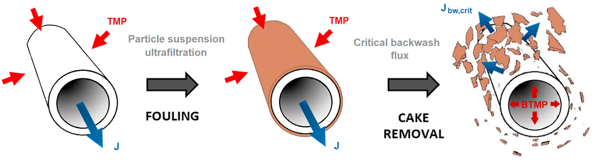
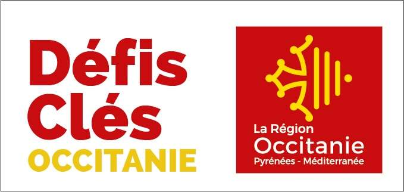

Introduction
Production–regeneration systems describe processes that must alternate between a productive phase and a recovery phase. During production, the system generates an output (for instance filtered water), but this phase also progressively degrades an internal state (such as fouling or resistance). The regeneration phase does the opposite: it restores the system’s internal condition, but does not directly produce useful output.
This package focuses on the analysis and optimization of such systems, particularly in the context of membrane filtration processes where fouling accumulates during filtration and must be periodically removed through regeneration (e.g., backwashing). Such system is schematized through the following figure:

Description of membrane filtration system
The goal now is to briefly describe the modelling of a membrane filtration process, in order to introduce two examples of problems which can be handled with CTMembraneFiltration.jl package.
The permeate flux $J~(\mathrm m. \mathrm s^{-1})$ corresponds to the permeate volume $v~(\mathrm m^3)$ flow per membrane area $A~(\mathrm m^2)$ and is related to the total resistance $R~(\mathrm m^{-1})$ of the membrane according to the Darcy's law
\[ J = \frac{\dot v}{A} = \frac{\Delta p}{\mu R}\]
where $\Delta p~(\mathrm{Pa})$ corresponds to the trans-membrane pressure and $\mu~(\mathrm{Pa}.\mathrm s)$ is the permeate viscosity. The total resistance of the membrane corresponds to the sum between the the intrinsic resistance $R_0~(\mathrm m^{-1})$ and the residual cake resistance $R_c~(\mathrm m^{-1})$ thanks to the "resistances-in-series" concept
\[ R = R_0 + R_c. \]
The pump consumes an energy $e~(\mathrm W.\mathrm h)$ flow, whose variation is proportional to the hydraulic power $P_h~(\mathrm W)$, the later being the product of the permeate flow $J$ by the trans-membrane pressure $\Delta p$
\[ \dot e = \frac{J\Delta p}{\eta},\]
where $\eta$ is the efficiency parameter of the pump.
The dynamics of the resistance $R_c$ rely on complex phenomena, but an efficient simple formulation is given by the following:
- In filtration phases (when $u = +1$), this resistance variation is proportional to the flux $J$ and the total suspended solids concentration $C~(\mathrm{Kg}.\mathrm m^{-3})$
\[ \dot R_c = J \beta C \quad \text{when} \quad u = +1,\]
where $\beta~(\mathrm m.\mathrm{Kg}^{-1})$ is a parameter that describes the resistance of the cake layer.
- In backwash phases (when $u = -1$), this resistance variation is proportional to the flux $J$ and the resistance cake layer $R_c$
\[ \dot R_c = J \omega R_c \quad \text{when} \quad u = -1,\]
where $\omega~(\mathrm m^{-1})$ models the detachment resistance of fouling.
Problem statement
Let us assume that the flux $J$ is constant during filtration ($J = J_f > 0$) and backwash ($J = -J_b < 0$) phases. The goal is to minimize the total power used to produce a targeted permeate volume $v_f$ at a free final time $t_f$. Using equations given previously, the dynamics of the cost and the state variables are given in filtration and backwash modes by
\[\mathrm{Filtration} : \left\{ \begin{array}{rl} \dot e & = \frac{J_f^2 \mu}{\eta} (R_0 + R_c), \\[0.5em] \dot R_c & = J_f \beta C, \\[0.5em] \dot v & = J_f A, \end{array} \right. \quad \text{and} \quad \mathrm{Backwash} : \left\{ \begin{array}{rl} \dot e & = \frac{J_b^2 \mu}{\eta} (R_0 + R_c), \\[0.5em] \dot R_c & = -J_b \omega R_c, \\[0.5em] \dot v & = - J_b A. \end{array} \right. \]
Let $u \in [-1, 1]$ be the control variable, where $u = +1$ denotes filtration mode and $u = -1$ denotes backwash mode, we consider the following optimal control problem
\[\text{(OCP)} \quad \left\{ \begin {array}{ll} \displaystyle \min_{x,y,t_f} \int_{t_0}^{t_f} \frac{\mu(R_0 + R_c(t))}{2\eta}\big(J_f^2 + J_b^2 + u(t)(J_f^2 - J_b^2)\big) \, \mathrm dt, & \\[1em] \displaystyle \mathrm{s.t.} \ \dot R_c(t) = J_f\beta C - J_b \omega R_c(t) + u(t)\big(J_f \beta C + J_b \omega R_c(t)\big), & t \in [t_0, t_f] \ \mathrm{a.e.}, \\[1em] \displaystyle \phantom{\mathrm{s.t.} \ } \dot v(t) = A\big((J_f - J_b) + u(t)(J_f + J_b)\big), \, & t \in [t_0, t_f] \ \mathrm{a.e.}, \\[1em] \phantom{\mathrm{s.t.} \ } u(t) \in [-1, 1], & t \in [t_0, t_f], \\[1em] \phantom{\mathrm{s.t.} \ } R_c(t_0) = R_{c0}, \quad v(t_0) = v_0, \quad v(t_f) = v_f, \end{array} \right.\]
where $t_0 \in \mathbb R$, $R_{c0} > 0$, $v_0 > 0$ and $v_f > 0$ are provided.
Main theoretical results
Based on the theoretical developments presented in Dutto et al., 2026, all possible optimal solution structures are characterized by the following result:
Under standard regularity assumptions, and denoting
- $\sigma_-$ a regeneration arc associated to $u = -1$,
- $\sigma_+$ a production arc associated to $u = +1$,
- $\sigma_s$ a singular arc associated to $u = u_s$,
the structure of an optimal solution can only be one of the following:
\[\sigma_+, \ \sigma_-\sigma_+, \ \sigma_s\sigma_+, \ \sigma_-\sigma_s\sigma_+ ~ \text{or} ~ \sigma_+\sigma_s\sigma_+.\]
Here, $u_s$ denotes a singular control such that $\dot x = 0$. See Dutto et al., 2026 for a detailed presentation and proof.
Reproducibility
You can download the exact environment used to build this documentation:
📦 Project.toml - Package dependencies
📋 Manifest.toml - Complete dependency tree with versions
ℹ️ Version info
Julia Version 1.12.6
Commit 15346901f00 (2026-04-09 19:20 UTC)
Build Info:
Official https://julialang.org release
Platform Info:
OS: Linux (x86_64-linux-gnu)
CPU: 4 × AMD EPYC 7763 64-Core Processor
WORD_SIZE: 64
LLVM: libLLVM-18.1.7 (ORCJIT, znver3)
GC: Built with stock GC
Threads: 1 default, 1 interactive, 1 GC (on 4 virtual cores)
Environment:
JULIA_PKG_SERVER_REGISTRY_PREFERENCE = eager📦 Package status
Status `~/work/CTMembraneFiltration.jl/CTMembraneFiltration.jl/docs/Project.toml`
[32497522] CTMembraneFiltration v0.1.0 `~/work/CTMembraneFiltration.jl/CTMembraneFiltration.jl`
[e30172f5] Documenter v1.17.0📚 Complete manifest
Status `~/work/CTMembraneFiltration.jl/CTMembraneFiltration.jl/docs/Manifest.toml`
[a4c015fc] ANSIColoredPrinters v0.0.1
[1520ce14] AbstractTrees v0.4.5
[32497522] CTMembraneFiltration v0.1.0 `~/work/CTMembraneFiltration.jl/CTMembraneFiltration.jl`
[944b1d66] CodecZlib v0.7.8
[ffbed154] DocStringExtensions v0.9.5
[e30172f5] Documenter v1.17.0
[d7ba0133] Git v1.5.0
[b5f81e59] IOCapture v1.0.0
[692b3bcd] JLLWrappers v1.7.1
[682c06a0] JSON v1.5.0
[0e77f7df] LazilyInitializedFields v1.3.0
[d0879d2d] MarkdownAST v0.1.3
[69de0a69] Parsers v2.8.3
[aea7be01] PrecompileTools v1.3.3
[21216c6a] Preferences v1.5.2
[2792f1a3] RegistryInstances v0.1.0
[ec057cc2] StructUtils v2.7.1
[3bb67fe8] TranscodingStreams v0.11.3
[2e619515] Expat_jll v2.7.3+0
[020c3dae] Git_LFS_jll v3.7.0+0
[f8c6e375] Git_jll v2.53.0+0
[94ce4f54] Libiconv_jll v1.18.0+0
[9bd350c2] OpenSSH_jll v10.3.1+0
[0dad84c5] ArgTools v1.1.2
[56f22d72] Artifacts v1.11.0
[2a0f44e3] Base64 v1.11.0
[ade2ca70] Dates v1.11.0
[f43a241f] Downloads v1.7.0
[7b1f6079] FileWatching v1.11.0
[b77e0a4c] InteractiveUtils v1.11.0
[ac6e5ff7] JuliaSyntaxHighlighting v1.12.0
[b27032c2] LibCURL v0.6.4
[76f85450] LibGit2 v1.11.0
[8f399da3] Libdl v1.11.0
[56ddb016] Logging v1.11.0
[d6f4376e] Markdown v1.11.0
[ca575930] NetworkOptions v1.3.0
[44cfe95a] Pkg v1.12.1
[de0858da] Printf v1.11.0
[3fa0cd96] REPL v1.11.0
[9a3f8284] Random v1.11.0
[ea8e919c] SHA v0.7.0
[9e88b42a] Serialization v1.11.0
[6462fe0b] Sockets v1.11.0
[f489334b] StyledStrings v1.11.0
[fa267f1f] TOML v1.0.3
[a4e569a6] Tar v1.10.0
[8dfed614] Test v1.11.0
[cf7118a7] UUIDs v1.11.0
[4ec0a83e] Unicode v1.11.0
[e66e0078] CompilerSupportLibraries_jll v1.3.0+1
[deac9b47] LibCURL_jll v8.15.0+0
[e37daf67] LibGit2_jll v1.9.0+0
[29816b5a] LibSSH2_jll v1.11.3+1
[14a3606d] MozillaCACerts_jll v2025.11.4
[458c3c95] OpenSSL_jll v3.5.4+0
[efcefdf7] PCRE2_jll v10.44.0+1
[83775a58] Zlib_jll v1.3.1+2
[8e850ede] nghttp2_jll v1.64.0+1
[3f19e933] p7zip_jll v17.7.0+0Partners and Fundings
